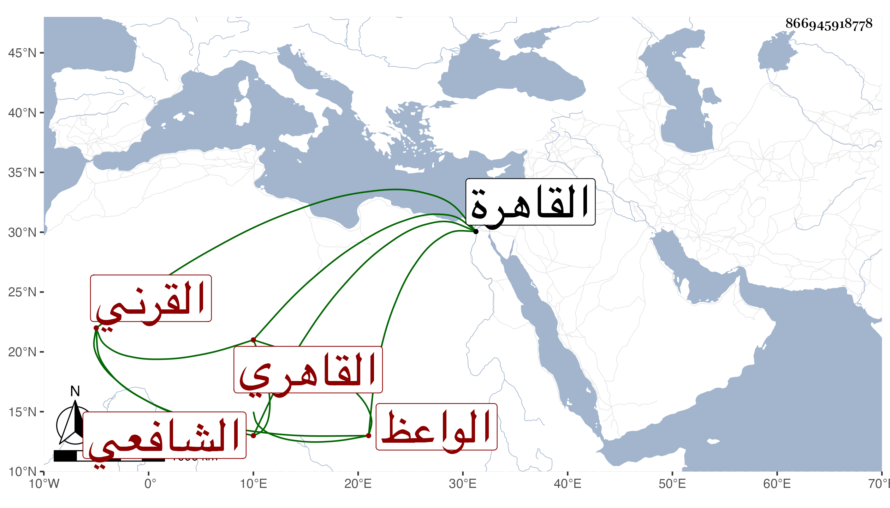

0902Sakhawi.DawLamic.ITO20230111-ara1.EIS1600.866945918778
Biography ID: 866945918778
558
محمد بن حسن بن عبد الله بن سليمان البدر أبو المعالي القرني نسبة فيما قال لأويس القاهري الشافعي الواعظ ويعرف بابن الشربدار حرفة والده وجده . ولد في ربيع الأول سنة سبع وتسعين وسبعمائة بالقاهرة ونشأ بها فحفظ القرآن وهو ابن سبع وتلا به على مؤدبه الشمس بن أنس والعمدة والتنبيه وكذا جامع المختصرات والتسهيل فيما زعم وألفية ابن ملك والمنهاج وجمع الجوامع الاصليين وغيرها وعرض على جماعة كالزين العراقي والسراج البلقيني وقريبه أبي الفتح البلقيني والبدر الطنبدى والزين الفارسكورى وأخذ الفقه عن البيجوري والمجد والشمس البرماويين والعربية والصرف عن الشمسين الشطنوفي وابن هشام العجيمي الشافعي وغيرهما والأصلين وغيرهما عن العز بن جماعة ولازمه مدة طويلة في المنطق والمعاني والبيان وغيرها من المعقولات وقال أنه كان يشكر حافظته ونهاه عن كثرة الدرس ويقول له أخشى عليك الاختلاط فلم ينته حتى اختلط في حدود سنة خمس عشرة فقال الناس ان ذلك من أكله حب البلادر ثم تراجع ولازم التفهم في مجالس الدروس حتى برع في غالب ما تقدم من العلوم وشارك الناس في الفضائل وتكلم على الناس بالوعظ في الجوامع وغيرها حتى عرف بذلك وصار له فيه صيت عند العامة وتكسب منه وأكثر من المنازعة للمتصدين له مع تهاونه في أمور الدين ونسبته لهنات وزلات بحيث لا يؤتمن على نقل ولا يوصف بعقل وقد سمع على ابن أبي المجد والعراقي والهيثمي والتنوخى بل كان يذكر أنه سمع على آخرين وحدث باليسبر سمع منه الفضلاء سمعت منه وكتبت عنه من نظمه أبياتا . مات في رجب سنة إحدى وسبعين رحمه الله وعفا عنه .
